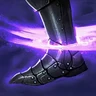
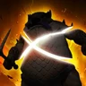
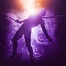
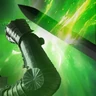
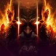
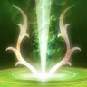
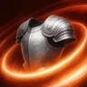

Leveling progress
Tick steps as you go. Progress is saved in this browser, separately for each class.
WIP PvP · Work in progress
This mode is built from Korean builds and our own picks, not from a tested global build. Treat it as a starting point until global players post theirs.
Overview
Gladiator is NCSoft's flagship class and has stayed S-tier on the Korean and Taiwanese servers. It buffs the party, pseudo-tanks and deals huge damage with fewer decisions to make than other classes. Sorcerer and Assassin edge it out on a static dummy, but Gladiator is close behind and far simpler to play.
The build in one sentence
Overhead Slam at 16–20, Lunge Stance at stigma level 20 and Rage Burst to trigger Overhead Slam. Everything else is support.
Global Season 1: what changes
Global servers open on October 5, 2026 (Founder's early access from September 30), separate from the Korean/Taiwanese servers. What that means for Gladiator:
- 4 stigma slots instead of 6 (expected for Season 1 only).
- Stigmas cap at level 20 — the level-25 tier doesn't exist in the global client.
- No Heroic gear in Season 1, so gear has fewer bonus lines for passives.
- Weaker Daevanion bonuses than in Taiwan: fights run longer, so uptime matters more.
- Bigger groups: 5-player expeditions and 10-player sanctuaries, and Elyos and Asmodians can queue together. Party buffs are worth more.
- PvP: everyone starts on the same limited gear and no meta has formed yet.
Active skills and passives are identical in the global and KR/TW data. Only stigmas lose their level-25 tier.
Skills
Only three skills need to go high: Overhead Slam → Rending Blow → Ruinous Blow. Skills reach 10 from skill points, 14 with Daevanion, 16 with two rings (+1 each) and 20 with arcana. Specializations unlock at 8, 12 and 16.
-
Overhead Slam 16 → 20Your #1 damage source. With Rage Burst and Lunge Stance it's effectively always up.
- 8Adds [Upward Strike] Chain Skill
- 12Critical Hit on hit
- 16Remove cooldown
All specializations
- 8Absorbs 0.7% HP
- 8Changes to AoE Skill
- 8Adds [Upward Strike] Chain Skill
- 12Critical Hit on hit
- 16Remove cooldown
-
Rending Blow 16 → 20Second-biggest damage source and your mana engine.
- 8Changes to mobile skill
- 12Deals up to 12% more damage when less targets are hit
- 16Restores 50 MP on landing a Critical Hit
All specializations
- 8-20% MP consumed
- 8+200 Block while using skill
- 8Changes to mobile skill
- 12Deals up to 12% more damage when less targets are hit
- 16Restores 50 MP on landing a Critical Hit
-
Ruinous Blow 16Big nuke that grants Prepare for Battle (+20% PvE damage, 20s).
- 8+30% Skill Critical Hit
- 12Extra damage on hit
All specializations
- 8+20% Skill Speed
- 8+12.5m Range
- 8+30% Skill Critical Hit
- 12Extra damage on hit
- 16Ignores Block and Evasion and lands as Multi-Hit
-
Leaping Slam 12Main gap-closer; 3s of Prepare for Battle before Ruinous Blow extends it.
- 8Prepare for Battle effect on the caster for 3s
- 8Resets cooldown on defeating an enemy
All specializations
- 8Prepare for Battle effect on the caster for 3s
- 850% chance to trigger [Ankle Slice] on hit
- 8Resets cooldown on defeating an enemy
- 12+20% PvE Damage Tolerance and +10 PvP Damage Tolerance for 3s
- 16Changes to AoE skill and pulls in enemies
-
Rush Strike 12Dodge into a gap-close. With Lunge Stance's cooldown procs, Stamina beats −10s cooldown.
- 8Restores 300 Stamina on hit
- 8+10m Range
All specializations
- 8Restores 300 Stamina on hit
- 8+10m Range
- 8Changes to Charge Skill and deals AoE damage
- 12-10s cooldown
- 16+25% Knockdown Chance
-
Mocking Blade 12Emergency heal button: 15% HP absorbed from bosses.
- 8Absorbs 4% HP, absorbs 15% HP of target with Incapacitated Immunity
- 8Changes to AoE damage on down strike
All specializations
- 8Absorbs 4% HP, absorbs 15% HP of target with Incapacitated Immunity
- 8Changes to AoE damage on down strike
- 8Adds 2 additional strikes
- 12+1s Knockdown duration
- 16Ignores Block and Evasion and lands as Multi-Hit
-

Ankle Slice 12Backup closer. Skip the Ankle Smash chain — it slows your rotation.- 8+16m [Ankle Slice] range
- 12Ignores Block and Evasion and lands as Multi-Hit
All specializations
- 830% chance to inflict Knockdown for 3s on landing [Ankle Slice]
- 8Adds [Ankle Smash] Chain Skill
- 8+16m [Ankle Slice] range
- 12Ignores Block and Evasion and lands as Multi-Hit
- 1625% chance to reset [Ankle Slice] cooldown on Block
-
Crushing Wave 12Too slow for bosses; AoE and self-heal on trash.
- 8Absorbs 2% HP
- 12Resets cooldown on landing a Critical Hit
All specializations
- 8Absorbs 2% HP
- 8Restores 50 MP on landing a Critical Hit
- 8Up to +20% damage when more targets hit
- 12Resets cooldown on landing a Critical Hit
- 1650% chance to pull
-
 Defiance 16 if spareCC break. Nice for raids, not a priority.
Defiance 16 if spareCC break. Nice for raids, not a priority.- 16+50% PvE Damage Tolerance and +25% PvP Damage Tolerance for Tenacity duration
All specializations
- 8Adds [Wrath Burst] Chain Skill
- 8Restores 1000 Stamina on using [Defiance]
- 8Restores 20% HP on using [Defiance]
- 12+2s Tenacity duration
- 16+50% PvE Damage Tolerance and +25% PvP Damage Tolerance for Tenacity duration
-

Sword Aura Rampage leftoversOnly hits Staggered targets — a few seconds per fight.- 8Changes to mobile skill
- 16-1s all skill cooldowns on hit
All specializations
- 8Absorbs 5% HP
- 8Restores 120 MP
- 8Changes to mobile skill
- 12Multi-Hit on hit
- 16-1s all skill cooldowns on hit
-
Keen Strike levelingFiller until the Overhead Slam macro is online.
All specializations
- 8+20% MP restored
- 8Absorbs 1% HP
- 8+50% Multi-Hit on hit
- 12-1s [Ruinous Blow] cooldown on hit
- 16Adds [Reckless Strike] Chain Skill
-

Aerial Snare —PvP tool. Keep it out of your PvE macro.All specializations
- 8Multi-Hit on hit
- 8+25% [Aerial Snare] Airborne Chance
- 8+100% damage to targets with Incapacitated Immunity
- 12Adds [Forced Fall] Chain Skill
- 16-50% [Aerial Snare] cooldown
Passives
Passive points are plentiful — most passives max out without any thought. Two traps:

Protection Armor — a tiny heal on block. Reroll gear and cards that roll it.
Destructive Impulse — bonus damage only on Staggered targets. Too rare to matter.
Blood Absorption needs no investment: a 50% chance to heal on every hit, plus a big instant heal when you drop to 50% HP. It's why Gladiator gets by without a healer.
Gear & soulbind
With no Heroic gear, attack speed, move speed, Might and Precision take most of the bonus lines, leaving 1–2 for passives. Priority:
| # | Passive | Why |
|---|---|---|
| 1 | Flat PvE Damage Boost, Defense and Accuracy. No conditions. | |
| 2 | Experienced Counterstrike | Front damage at all times, plus a 20s PvE Damage Boost for you and the party on every block. Doesn't stack with a Templar's Fury but covers a party without one. |
| 3 | Murderous Burst / | Every 5 hits = AoE burst + crit damage / more Impact and Double chance. |
Weapon and front/back damage boosts are the strongest types, and Gladiator always fights from the front. Don't chase perfect manastone rolls in Season 1 — rerolls cost roughly 200–300k each on TW.
Arcana
A card leveled to 5 averages about +2 to a random skill it can roll.
| Card | Look for |
|---|---|
| Parchment | Overhead Slam and Ruinous Blow — the only two of its six that matter. |
| Compass | Rending Blow only. Use the Freedom version for Accuracy — parries in front of a boss are lost damage. |
| Grail | Rolls any skill; crafting lets you pick two. Top up whatever is still short of 20. |
Average luck: 14 + 2 (ring) + 2 + 2 = 20 on Overhead Slam. If only one more skill can reach 20, pick Rending Blow over Ruinous Blow.
Sets & passive cards
Aim for 4-piece Primal Vigor. Gladiator never needs CDR (Illusion). If MP runs dry at Season 1 attack speed, switch to 2-piece Magic Armor. Passive cards:  Attack Preparation first, then any mix of Experienced Counterstrike > Murderous Burst > Impact Hit > Identify Weakness.
Attack Preparation first, then any mix of Experienced Counterstrike > Murderous Burst > Impact Hit > Identify Weakness.
Daevanion boards
Daevanion takes your skills from 10 to 14 and adds a pile of stats. Each blue node gives +1 level to its skill.
| Board | Unlock | Focus |
|---|---|---|
| Nezekan | Lv 12 | Skill levels, base stats |
| Zikel | Lv 20 | Evasion, damage boost / tolerance |
| Vaizel | Lv 30 | Critical damage |
| Triniel | Lv 40 | Multi-hit (mostly PvP) |
| Ariel | Lv 45 | PvE damage & resistance |
| Azphel | Lv 45 | PvP damage & resistance |
- Node costs: grey stat 1, green passive 2, blue skill 3, orange special 4.
- Priority: blue nodes for Overhead Slam, Rending Blow, Ruinous Blow, then orange nodes, then stats.
- Priority: blue nodes for Overhead Slam, Mocking Blade, Defiance, Aerial Snare, then orange nodes.
- Ariel, not Azphel — same cost (reportedly 128 points), and choosing wrong is the most expensive mistake in the system.
- Azphel, not Ariel, and take Triniel earlier — multi-hit is a PvP stat.
Board layouts come from the KR/TW client, and global values are lower. Check the in-game board before committing a full route.
Stigmas
Three stigmas are locked in, and the fourth depends on your party. Skip Wrath Wave, Armor of Balance, Blade Toss, Forced Restraint, Assault Strike and Fracturing Rush in PvE.
-
Lunge Stance Lv 20The level-20 proc cuts all cooldowns on crits: permanent Overhead Slam, Rage Burst, block and gap-closers. First stigma to max.
- 5+5% Double Chance for the duration
- 10Increases Move Speed by 20% for the duration
- 15x1.5 [Identify Weakness] effect for the duration
- 2050% chance to reduce all skill cooldowns by 1s on Critical Hit for the duration
All specializations
- 5+5% Double Chance for the duration
- 10Increases Move Speed by 20% for the duration
- 15x1.5 [Identify Weakness] effect for the duration
- 2050% chance to reduce all skill cooldowns by 1s on Critical Hit for the duration
-
Focused Block Lv 5Guaranteed Parry. Every block triggers Experienced Counterstrike's party buff — blocking is buffing. Take it first while leveling.
- 5+1 consecutive use
All specializations
- 5+1 consecutive use
- 10Changes to mobile skill
- 15+20% Move Speed for 3s on Parry
- 20Restores 10% HP once on Parry
-
Rage Burst Lv 5Triggers Overhead Slam on the target for 10s, +10% PvE Damage Boost and −10% boss Attack.
- 5-15s [Rage Burst] cooldown
All specializations
- 5-15s [Rage Burst] cooldown
- 10+10% Attack reduction
- 15Critical Hit on hit
- 20+10% PvE Damage Boost increase and +5% PvP Damage Boost increase
-
Zikel's Blessing Lv 10Default 4th slot: +20% Attack, doesn't depend on how well your party plays.
- 5+50% Stagger Gauge Damage
- 10+10% PvE Damage Boost and +5% PvP Damage Boost
All specializations
- 5+50% Stagger Gauge Damage
- 10+10% PvE Damage Boost and +5% PvP Damage Boost
- 15+50% Multi-Hit chance
- 20+20% Status Effect Chance
-

Lifestealing Blade Lv 204th slot for an organized party: Predation boosts everyone's hits. Only worth it at 20.- 5Up to +20% damage when more targets hit
- 10Predation effect on party members for 20s
- 15-30s cooldown
- 20+5% HP absorbed
All specializations
- 5Up to +20% damage when more targets hit
- 10Predation effect on party members for 20s
- 15-30s cooldown
- 20+5% HP absorbed
-

Wave Armor Lv 15Only without a Templar. Its strong level-25 tier doesn't exist in global.- 5Absorbs 2% HP
- 10x1.5 [Experienced Counterstrike] effect for the duration
- 15x1.5 [Murderous Burst] effect for the duration
All specializations
- 5Absorbs 2% HP
- 10x1.5 [Experienced Counterstrike] effect for the duration
- 15x1.5 [Murderous Burst] effect for the duration
- 20Reflects 10% of damage taken
Stigma sources: Nightmare shop, Shugo Festa shop and the tiered Abyss shop. Gladiator needs so few that it's set up within the first days.
Macro & rotation
AION 2 has two separate tools, and the build uses both:
- Hotbar line — several skills stacked on one hotbar button. Pressing it casts the highest-priority skill that's ready, and in AION 2 the bottom slot has the highest priority. The cards below show each line top to bottom as in the game, with the priority number on every skill.
- In-game macro — while you hold its key, it presses your hotbar lines in order and cancels animation tails. Skills on cooldown are skipped. Hold your basic attack (LMB) together with the macro key instead of putting it into the macro — the game weaves and cancels it better that way.
Gladiator needs 6 skills on 3 buttons: 4 damage skills and 2 buffs.
1. Hotbar lines
- 3 Rending Blow
- 2 Overhead Slam
- 1 Rage Burst
In-game order, top to bottom. 1 = highest priority — the bottom slot.
Rage Burst sits in the bottom slot — see below.
- 2 Lifestealing Blade
- 1 Ruinous Blow
In-game order, top to bottom. 1 = highest priority — the bottom slot.
Grants Combat Ready. Add Lifestealing Blade only if it's in your stigmas.
- 2 Zikel's Blessing
- 1 Lunge Stance
In-game order, top to bottom. 1 = highest priority — the bottom slot.
Both keep themselves up thanks to Lunge Stance's cooldown cuts.
2. In-game macro
Skill window → Macro. Put the three lines in this order and set every Delay to 10 ms (it's the pause between buttons, not your ping). Bind the macro in Settings → Key Settings → General → Gameplay → Macro — a side mouse button is ideal, because you hold it.
- 1Main lineRMB · 10 ms
- 2Ruinous lineE · 10 ms
- 3Buff lineR · 10 ms
Season 1 tip (Grobs): cooldowns are slow at launch, so buffs are worth more when timed — you can take the buff line out of the macro and press it yourself right before a boss or a big pack.
3. What you actually press
- HoldMacro key the whole fight.
- SpamRMB main line and E Ruinous line on top of it — the two lines must stay separate so they can be woven.
- By handFocused Block (block = party buff), Mocking Blade (knockdown + heal), Leaping Slam (gap closer), Crushing Wave on packs.
Why Rage Burst sits at the bottom
Rage Burst is a buff that must always be up, so it takes the bottom slot — the highest priority — and fires every time it comes off cooldown. Put it above Overhead Slam and it never fires: Lunge Stance keeps Overhead Slam permanently available, and the lower slot always wins. Don't stuff more skills into the main line: macro timing depends on frame rate, and any delay to Overhead Slam costs more than the extra skill adds.
Where the damage comes from
On a one-minute dummy parse: Overhead Slam (incl. Upward Strike) > Rending Blow > Ruinous Blow > Lunge Stance > Murderous Burst > Rage Burst.
The macro keeps pace — it doesn't play for you. You still decide when to block, when to close distance and when to self-heal. Season 1's weaker stats mean multi-minute boss fights, so every second of lost uptime counts.
Keys are Arthars' action-mode layout (RMB / E); on tab-target use any two keys you can spam. The macro slot order follows the same line-by-line scheme Korean builds use.
Recap
- Skills: Overhead Slam 20, Rending Blow 16→20, Ruinous Blow 16; everything else 12 or less.
- Levels from: Daevanion (+4) → rings (+2) → arcana (+4).
- Stigmas: Lunge Stance 20, Focused Block 5, Rage Burst 5, Zikel's Blessing 10 (or Lifestealing Blade 20).
- Passives: Attack Preparation > Experienced Counterstrike > Murderous Burst / Impact Hit.
Overview
In PvP, Gladiator is a durable diver: it closes distance, knocks the target down and punishes the knockdown with Overhead Slam. It has enough HP, block and self-heal to survive in the middle of the fight. It's one of the most popular PvP classes, so expect mirror matches.
Priorities in order: anti-control → stickiness → burst when their defensives are down.
No global PvP meta exists yet. This mode combines Korean/Taiwanese PvP builds with skill data from the global client — treat it as a starting point.
Skills
The one mechanic that matters: Knockdown
Overhead Slam and Aerial Snare only hit a target afflicted with Knockdown (bosses are an exception, which is why PvE never cares). Every burst window starts with a knockdown: Mocking Blade (guaranteed), Rush Strike after a dodge, Ankle Slice. The exception is Rage Burst, which enables Overhead Slam on its target for 10s.
-
Overhead Slam 16 → 20Your punish on knocked-down targets. Korean PvP guides call the level-20 guaranteed crit essential.
- 8Adds [Upward Strike] Chain Skill
- 12Critical Hit on hit
- 16Remove cooldown
All specializations
- 8Absorbs 0.7% HP
- 8Changes to AoE Skill
- 8Adds [Upward Strike] Chain Skill
- 12Critical Hit on hit
- 16Remove cooldown
-
Mocking Blade 16Guaranteed 3s Knockdown — your main opener.
- 8Adds 2 additional strikes
- 12+1s Knockdown duration
- 16Ignores Block and Evasion and lands as Multi-Hit
All specializations
- 8Absorbs 4% HP, absorbs 15% HP of target with Incapacitated Immunity
- 8Changes to AoE damage on down strike
- 8Adds 2 additional strikes
- 12+1s Knockdown duration
- 16Ignores Block and Evasion and lands as Multi-Hit
-
Defiance 16Breaks Stun, Knockdown, Airborne, Grab, Frost and Fear. Mandatory.
- 8Restores 20% HP on using [Defiance]
- 12+2s Tenacity duration
- 16+50% PvE Damage Tolerance and +25% PvP Damage Tolerance for Tenacity duration
All specializations
- 8Adds [Wrath Burst] Chain Skill
- 8Restores 1000 Stamina on using [Defiance]
- 8Restores 20% HP on using [Defiance]
- 12+2s Tenacity duration
- 16+50% PvE Damage Tolerance and +25% PvP Damage Tolerance for Tenacity duration
-
Aerial Snare 16Follow-up that launches a knocked-down target. Useless in PvE, core here.
- 8+25% [Aerial Snare] Airborne Chance
- 12Adds [Forced Fall] Chain Skill
- 16-50% [Aerial Snare] cooldown
All specializations
- 8Multi-Hit on hit
- 8+25% [Aerial Snare] Airborne Chance
- 8+100% damage to targets with Incapacitated Immunity
- 12Adds [Forced Fall] Chain Skill
- 16-50% [Aerial Snare] cooldown
-
Rush Strike 12–16Dodge → dash with a Knockdown chance.
- 8+10m Range
- 12-10s cooldown
- 16+25% Knockdown Chance
All specializations
- 8Restores 300 Stamina on hit
- 8+10m Range
- 8Changes to Charge Skill and deals AoE damage
- 12-10s cooldown
- 16+25% Knockdown Chance
-
Rending Blow 16Still your filler and mana engine.
- 8Changes to mobile skill
- 16Restores 50 MP on landing a Critical Hit
All specializations
- 8-20% MP consumed
- 8+200 Block while using skill
- 8Changes to mobile skill
- 12Deals up to 12% more damage when less targets are hit
- 16Restores 50 MP on landing a Critical Hit
-
Ruinous Blow 12–16A third gap-closer; ignoring Block/Evasion is strong against Templars.
- 8+12.5m Range
- 16Ignores Block and Evasion and lands as Multi-Hit
All specializations
- 8+20% Skill Speed
- 8+12.5m Range
- 8+30% Skill Critical Hit
- 12Extra damage on hit
- 16Ignores Block and Evasion and lands as Multi-Hit
-
Crushing Wave 16The pull drags a healer or caster out of their backline.
- 12Resets cooldown on landing a Critical Hit
- 1650% chance to pull
All specializations
- 8Absorbs 2% HP
- 8Restores 50 MP on landing a Critical Hit
- 8Up to +20% damage when more targets hit
- 12Resets cooldown on landing a Critical Hit
- 1650% chance to pull
-
Ankle Slice 12Another way into the knockdown window.
- 830% chance to inflict Knockdown for 3s on landing [Ankle Slice]
- 8+16m [Ankle Slice] range
All specializations
- 830% chance to inflict Knockdown for 3s on landing [Ankle Slice]
- 8Adds [Ankle Smash] Chain Skill
- 8+16m [Ankle Slice] range
- 12Ignores Block and Evasion and lands as Multi-Hit
- 1625% chance to reset [Ankle Slice] cooldown on Block
-
Leaping Slam 1220m leap that survives landing in a group.
- 850% chance to trigger [Ankle Slice] on hit
- 12+20% PvE Damage Tolerance and +10 PvP Damage Tolerance for 3s
All specializations
- 8Prepare for Battle effect on the caster for 3s
- 850% chance to trigger [Ankle Slice] on hit
- 8Resets cooldown on defeating an enemy
- 12+20% PvE Damage Tolerance and +10 PvP Damage Tolerance for 3s
- 16Changes to AoE skill and pulls in enemies
Passives
| Passive | PvP value |
|---|---|
| Still #1: PvP Damage Boost, Defense, Accuracy. | |
| Survival Willpower | Status resist plus tolerance while you're CC'd. Dead weight in PvE, great here. |
| Survival Stance | HP and PvP Damage Tolerance. |
| More Impact chance — your knockdowns land more often. | |
| Destructive Impulse | Bonus damage on knocked-down targets — the PvE trap becomes useful. |
Gear & arcana
With Season 1's limited gear, don't build a separate PvP set yet — keep your PvE gear and change passives, stigmas and Daevanion.
- Accuracy — players Block and Evade far more than bosses.
- Critical Hit and Combat Speed — crits drive Lunge Stance's cooldown procs.
- PvP Damage Boost / Tolerance over the PvE versions wherever a slot offers them.
- Arcana: Overhead Slam to 20 first, then Mocking Blade, Defiance and Aerial Snare to 16.
Stigmas
Korean PvP builds run exactly four stigmas, so they fit global's slots as-is.
| Mode | Stigmas |
|---|---|
| Abyss | Lunge Stance, Armor of Balance, Blade Toss, Tenaciousness |
| Arena | Lunge Stance, Armor of Balance, Tenaciousness, Focused Block |
-
Lunge Stance Lv 20Crit cooldown procs also bring Tenaciousness and Defiance back faster.
- 5+5% Double Chance for the duration
- 10Increases Move Speed by 20% for the duration
- 15x1.5 [Identify Weakness] effect for the duration
- 2050% chance to reduce all skill cooldowns by 1s on Critical Hit for the duration
All specializations
- 5+5% Double Chance for the duration
- 10Increases Move Speed by 20% for the duration
- 15x1.5 [Identify Weakness] effect for the duration
- 2050% chance to reduce all skill cooldowns by 1s on Critical Hit for the duration
-
Armor of Balance Lv 5+Hard to knock down for 10s. Pop it before diving into a CC-heavy group.
- 5+20% Ailment-type and Mental-type Resist
All specializations
- 5+20% Ailment-type and Mental-type Resist
- 10x1.5 [Blood Absorption] effect for the duration
- 15x1.5 [Protection Armor] effect for the duration
- 20+50% Impact-type Resist increase
-
Tenaciousness Lv 10+3s immunity to damage and status effects, then a heal. At 20 it triggers itself on Impact CC.
- 5+100% Incoming Heal
- 10Restores 20% Max HP when the effect ends
All specializations
- 5+100% Incoming Heal
- 10Restores 20% Max HP when the effect ends
- 15+20% Attack
- 20Trigger [Tenaciousness] when afflicted with Impact-type status
-
Blade Toss Abyss20m throw: −30% Defense and −50% healing received for 10s. Your answer to healers and runners.
- 5+20% [Blade Toss] Incoming Heal reduction
All specializations
- 5+20% [Blade Toss] Incoming Heal reduction
- 10[Blade Toss] inflicts Slow for 5s
- 15[Blade Toss] breaks Protective Shields
- 20[Blade Dance] has 30% chance to inflict Knockdown for 3s
-
Focused Block ArenaBlock their big damage skills in 1v1. Don't waste it on CC.
- 5+1 consecutive use
All specializations
- 5+1 consecutive use
- 10Changes to mobile skill
- 15+20% Move Speed for 3s on Parry
- 20Restores 10% HP once on Parry
-
Forced Restraint alt.Seal (silence) to lock a target during the Overhead Slam window.
- 550% chance to inflict Root for 5s
All specializations
- 550% chance to inflict Root for 5s
- 10-1,000 Stamina
- 15+2s Seal duration
- 20+25% Seal Chance
-
Rage Burst alt.Enables Overhead Slam without a knockdown for 10s.
- 5-15s [Rage Burst] cooldown
All specializations
- 5-15s [Rage Burst] cooldown
- 10+10% Attack reduction
- 15Critical Hit on hit
- 20+10% PvE Damage Boost increase and +5% PvP Damage Boost increase
Combos & play
Knockdown punish
Engage from range
No knockdown landed? Rage Burst or Forced Restraint opens the window anyway.
Staying alive
- Defiance breaks the first hard CC; save Tenaciousness for the follow-up chain.
- Armor of Balance goes up before you dive, not after you're down.
- Against healers: Blade Toss first, then the Crushing Wave pull.
Recap
- Skills: Overhead Slam 16→20, Mocking Blade 16, Defiance 16, Aerial Snare 16.
- Stigmas: Lunge Stance 20 + Armor of Balance + Tenaciousness + Blade Toss (Abyss) or Focused Block (Arena).
- Daevanion: Azphel over Ariel, Triniel earlier.
- Play: knockdown → Overhead Slam; break CC with Defiance, save Tenaciousness.
How to fight while leveling
- Packs: Leaping Slam in → Crushing Wave → Rending Blow. A kill resets Leaping Slam → next pack.
- Elites: Mocking Blade (knockdown) → spam Overhead Slam → Ruinous Blow on cooldown. Dodge → Rush Strike also knocks NPCs down.
- Low HP: Mocking Blade and Crushing Wave absorb HP; Blood Absorption heals at 50%. No potions needed on trash.
Leveling macro
A simpler setup for leveling and the first days at the cap, from Grobs' early-game macros. Only the skills you spam go in; buffs, stigma bursts and gap-closers stay on their own keys.
- 3 Rending Blow
- 2 Overhead Slam
- 1 Rage Burst
In-game order, top to bottom. 1 = highest priority — the bottom slot.
In-game macro: Line 1, each with a 10 ms delay. Hold your basic attack Keen Strike on LMB and the macro key together.
Once your skills reach 12–16 and specializations change their cooldowns, switch to the full setup in the PvE tab.
Sources
- Arthars Gaming — The ULTIMATE AION 2 Gladiator Starter Guide (PvE, from the TW server)
- questlog.gg — skill & stigma data from the global client
- Vortex Gaming — Korean PvP builds (Abyss / Arena)
- IGGM — global Season 1 changes
- nemobek.github.io/aion2-guide (TitanTheF's table) — leveling route
- Grobs — AION 2 Macro Guide — how hotbar lines and the in-game macro work